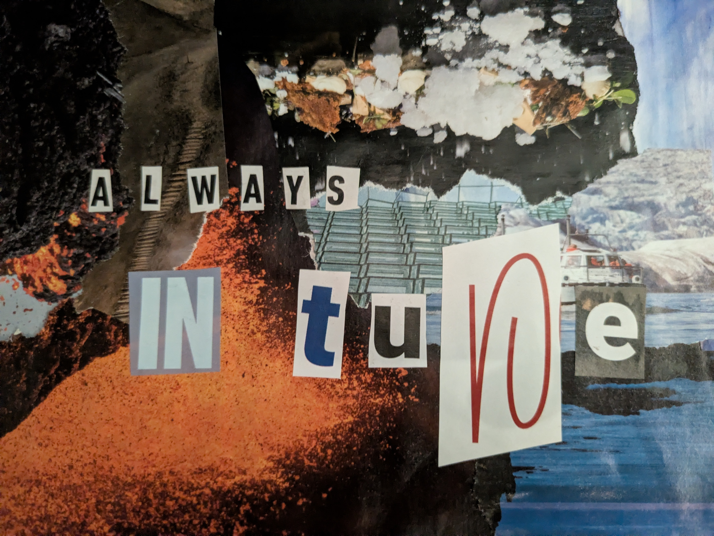

What do you do when you fall in love so much with the opening act that you are worried the main event is not going to hold up? I am in Iceland for 24 hours, en route to North America, for the first time in my life.
Iceland always sounded like a faraway place, even though it is only 3 hours from London. It was somewhere I had very little read on - except the Northern Lights and Björk. But landing in Keflavik and taking the airport shuttle to the city, I am immediately met with surprisingly pleasant weather, vast empty lands with yellow grass and snow remnants, and a rainbow - Iceland in a nutshell.
I did not do any of the nature-things that people recommend in Iceland: the glaciers, the volcanoes, the hikes, the saunas. That'll be for the next time. We coincidentally booked an Airbnb right by Hallgrímskirkja, the iconic church that looks like a sculpted organ and makes you question your entire aesthetic sense. I hate grey skies, brutalist architecture, and the too-neat geometric patterns. Why does it all work and work so beautifully in Iceland?

After an evening of settling in and having the first and best raw cured reindeer meat of my life, I am prepped for the next day. The first shop I walk into floors me. The style was very Alexander McQueen but also something of its own. It is an incredibly curated jewellery studio with specific imagery - mostly brass and steel work but uses gold for accents. Vinyl record player in a corner, postcards with strong images on them in every corner of the store, acting as its own art, a studio that uses an old sewing machine as a work table - it was like someone studied my sensibilities and tastes and put the store together. And then I see it, the grey metal bracelet with a golden fountain pen nib in the middle — telling me to own my identity.
I walk through some more of Reykjavik - the colourful murals that co-exist with warehouse buildings, the waitress who looks like Kate Winslet in Eternal Sunshine of the Spotless Mind, the boat that looks like fishbones. "There's clear waters, great art scene, and of course, music - thought you'd approve." I write a mental postcard that never gets sent. They say Icelandic is always in tune. For a minute, so was I.